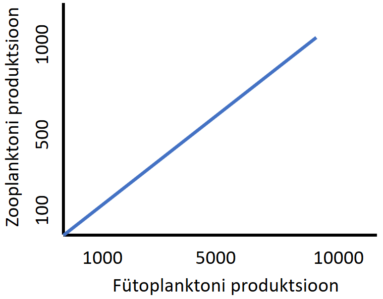
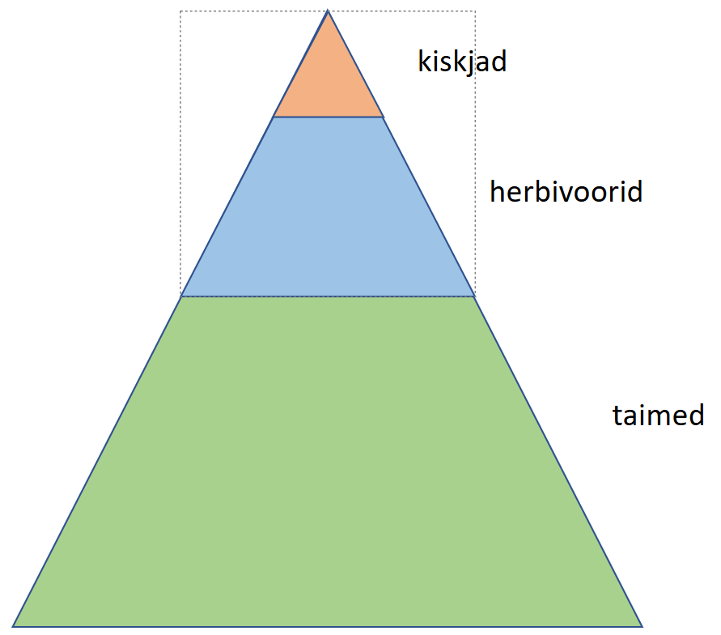
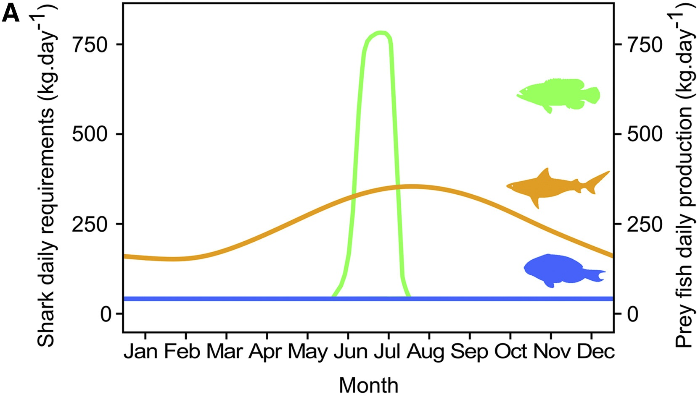
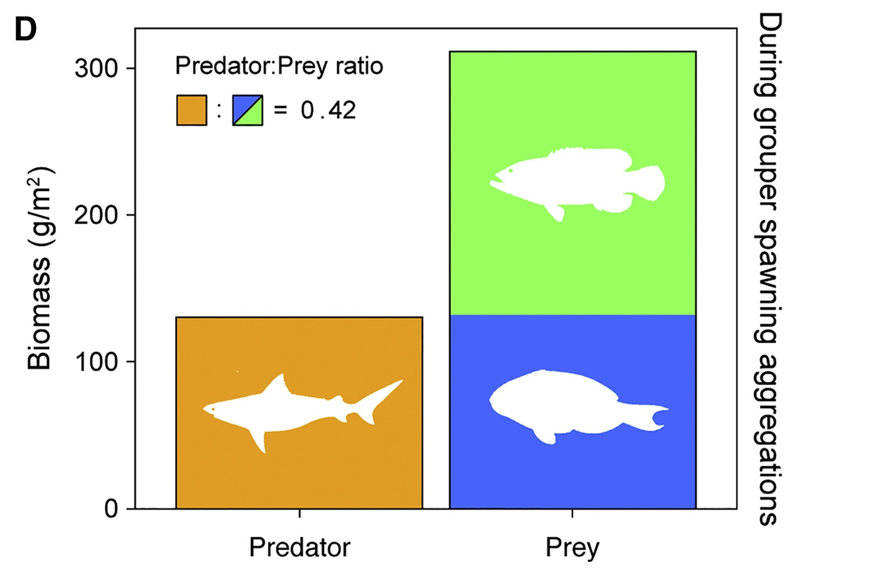
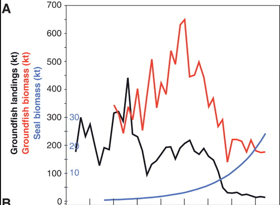
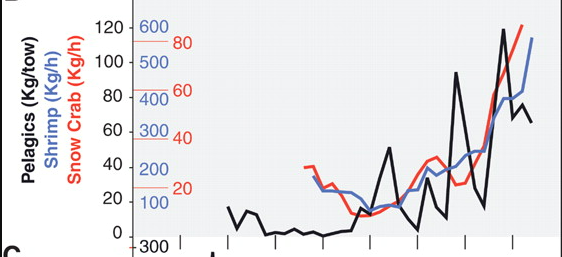
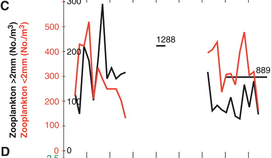
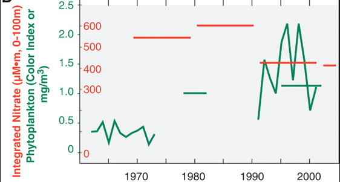

Koosluste energeetiline struktuur
Kooslus saab olla struktureeritud ka energiavoogude mõistes. Primaarprodutsendid assimileerivad päikeseenergia abil süsiniku, mille energia kulgeb herbivooride kaudu näiteks kiskjateni ja lagundajateni.
Elusorganismid moodustavad biomassi, mida mõõdetakse kas energia, kuivmassi või süsinikuhulgana pindalaühiku kohta. Enamiku sellest biomassist moodustavad maismaal taimed ja veeökosüsteemides enamasti vetikad, kuna nemad tegelevad primaarproduktsiooniga.
Koosluse/ökosüsteemi kogu primaarproduktsioon (GPP; gross primary production)- toodetud biomassi hulk pindalaühiku kohta ajaühikus (nt \(kg \times ha^{-1} \times aasta^{-1}\))
Netoprimaarproduktsioon (NPP; net primary production) - kogu primaarproduktsioon miinus autotroofne (taimede/sinivetikate/.. poolt toime pandav) respiratsioon (ehk elutegevuseks kulunud energia)
Sekundaarproduktsioon (secondary production) - heterotroofse biomassi kasv pindalaühiku kohta ajaühikus
Ökosüsteemi netoproduktsioon (NEP; net ecosystem production) - kogu primaarproduktsioon miinus kogu respiratsioon
Need energiavood liiguvad ökosüsteemis troofiliste tasemete kaudu. Mida suurem on primaarproduktsioon, seda suurem on sekundaarproduktsioon, üldreeglina on iga järgmise troofilise taseme produktsioon \(\frac{1}{10}\) eelmisest tasemest.

Troofiline püramiid
1:10 reeglit järgides peaks seega koosluse energeetiline struktuur välja nägema selline:

„The weight of all predators must always be much lower than that of all food animals, and the total weight of the latter much lower than the plant production“
Lindeman 1942
Siiski leidub ka erandeid.
Tagurpidine troofiline püramiid
Extreme Inverted Trophic Pyramid of Reef Sharks Supported by Spawning Groupers
Mourier, Johann et al.
Current Biology, Volume 26, Issue 15, 2011 - 2016
Koralliökosüsteemis on haide biomass tavaolukorras sama suur kui saakloomade oma. Samuti on kehasuuruse ja biomassi suhe positiivne, mis viitaks justkui tagurpidisele troofilisele püramiidile. 1/10 reeglit järgides peaks ju suuremate (mereökosüsteemis eelduslikult kõrgemal troofilisel tasemel olevate) elukate biomass olema väiksem! Kuidas see energia ei kao?


Energia kaob muidugi, kuid haid söövad kord aastas kudemiseks kohale rännanud kalasid. Saagi biomass selleks perioodiks mitmekordistub ja toimub eksogeenne energia sissevool süsteemi.
\(\frac{1}{10}\) reeglist hälbimise võimalikke põhjuseid:
parem energia ülekandeefektiivsus - näiteks parema söödavuse või efektiivsema jahipidamise kaudu
kiire tarbitava troofilise taseme uuenemiskiirus (turnover)
mosaiikne kasvukoht - soodustab erinevate ressursside kasutamist-jagamist
omnivooria - kiskja saab herbivooride taseme osaliselt vahele jätta
toiduahela produtsentide ja herbivooride “ajalooline kohalolek” - näiteks surnud orgaanilise ainena
kõrgema troofilise taseme organismide kehasuuruse tõus
mingisugune alloktoonne [eksogeenne; mujalt pärinev] energi juurdevoog
herbivooride kõrge mobiilsus - liiguvad “kooslusest” välja toitu otsima
Toiduahela kontroll
Kumb ots toiduahelat kontrollib?
Toiduahela “kontrollivaks” lüliks võiksime pidada seda troofilist taset, kellest sõltub toiduahela teiste tasemete ohtrus ja/või produktiivsus. Ökoloogias kirjeldatakse kahte paradigmat: alt-üles (bottom-up) ja ülalt-alla (top-down) kontroll.
Alt-üles kontrollitud süsteemis sõltub kõrgemate troofiliste tasemete arvukus peamiselt toiduahela esimest lüli piiravatest ressurssidest - näiteks valgus, toitained, vesi. Säärastes süsteemides põhjustab ressursside lisandumine suurema primaarproduktsiooni ja sellest johtuvalt suurema herbivooride → karnivooride → tippkiskjate arvukuse.
Alt-üles kontroll toimib süsteemides või (alam-)toiduahelates, kus tarbijad ei mõjuta (eriti) oma tarbitavaid organisme, näiteks detritivooria (surnud orgaanilisest ainest toitumine) või nektari- ja granivooria (seemnete söömine).
Vastupidiselt ülalmainitule kontrollivad ülalt-alla süsteemis tarbijad (peamiselt kiskjad) alamate tasemete ohtrust. Ülalt-alla kontrolli kutsutakse ka troofiliseks kaskaadiks (trophic cascade) - meenutagem näiteks päiskiviliike. Mõju suund primaarprodutsentidele võib sõltuda ka troofiliste tasemete arvust:
3-tasemeline toiduahel: kiskja kontrollib saaklooma (nt herbivoor) arvukust, kelle ohtruse vähenemine suurendab omakorda viimase ressursi (nt taimed) ohtrust
4-tasemeline toiduahel: tippkiskja vähendab primaarse kiskja ohtrust, herbivooride arvukus tõuseb, taimede biomass/ohtrus väheneb
Troofiline kaskaad mereelukate näitel
Frank, K. T., Petrie, B., Choi, J. S., & Leggett, W. C. (2005). Trophic Cascades in a Formerly Cod-Dominated Ecosystem. Science, 308(5728), 1621–1623. https://doi.org/10.1126/science.1113075
X-teljel on aastad 1965 - 2000.




Suurte kiskjate (tursk jt) väljapüüdmise tõttu vähenes oluliselt mereökosüsteemide oluline limiteeriv toitaine - lämmastik. Muutus terve ökosüsteem.